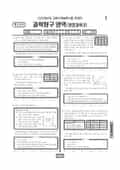

문제지

2022학년도 대학수학능력시험 · 2021년 11월 시행
2022학년도 수능 과학탐구 생명과학Ⅱ 1등급컷은 원점수 46점(추정), 표준점수 최고점은 69점입니다.
원점수 1등급컷은 공식 발표값이 아니라 EBSi·입시기관 값입니다. 등급별 값은 등급컷 표, 출처 구분은 데이터 원칙에 있습니다.

시험지를 먼저 풀어 보세요. 등급컷·표준점수·난이도는 흐리게 가려 뒀어요.
| 등급 | 원점수 | 표준점수 | 백분위 | 누적 |
|---|---|---|---|---|
| 1 | 46 | 65 | 98 | 4.13% |
| 2 | 43 | 63 | 91 | 11.93% |
| 3 | 39 | 60 | 78 | 23.38% |
| 4 | 32 | 55 | 59 | 41.86% |
| 5 | 22 | 46 | 40 | 60.68% |
| 6 | 14 | 40 | 22 | 80.66% |
| 7 | 11 | 37 | 12 | 89.04% |
| 8 | 8 | 35 | 5 | 96.41% |
등급별 컷 · 입시기관 2곳 원점수 추정 종합(EBSi·메가스터디) · 만점 50점
20번 전원 정답
이의신청 1문항 · 평가원 상세 답변 1문항
20번전원 정답사후 정정
이의심사에서는 '이상 없음'이었으나 법원이 정답결정을 취소(2021-12-15) → 전원 정답
평가원 공지 원문이의 요지
이 문항은 교육과정의 성취기준인 진화의 증거 사례를 조사하여 변이와 자연선택에 의한 진화의 ‘원리를 설명할 수 있다를 근거로집단 과 중 하디바인베르크 평형이 유지되는 집단을 찾.’, ·ⅠⅡ 고이를 바탕으로, 보기의 진위를 판단할 수 있는지 평가하는 문항입니다<>.이의신청의 주요 내용은 문항에 제시된 조건들을 동시에 만족시키는 집단이 존재할 수 없으므로 ‘해당 문항은 오류이며 전원 정답 처리되어야 한다는 것입니다.
평가원 답변
이 문항은 교육과정의 성취기준인 진화의 증거 사례를 조사하여 변이와 자연선택에 의한 진화의 ‘원리를 설명할 수 있다를 근거로집단 과 중 하디바인베르크 평형이 유지되는 집단을 찾.’, ·ⅠⅡ 고이를 바탕으로, 보기의 진위를 판단할 수 있는지 평가하는 문항입니다<>.이의신청의 주요 내용은 문항에 제시된 조건들을 동시에 만족시키는 집단이 존재할 수 없으므로 ‘해당 문항은 오류이며 전원 정답 처리되어야 한다는 것입니다.’.이에 대하여 한국교육과정평가원은 관련 분야 학회들과 다수의 외부 전문가들에게 자문 의견을 구하였으며이의심사실무위원회에서 그 의견들을 종합적으로 검토하였고이의심사위원회에서, , 최종적으로 심의하였습니다. 그 결과 이의신청에서 제기된 바와 같이 이 문항의 조건이 완전하지 않다고 하더라도, 교육과정의 성취기준을 준거로 학업 성취 수준을 변별하기 위한 평가 문항으로서의 타당성은 유지된다고 판단하였습니다.따라서 이 문항의 정답을 번으로 유지합니다.⑤학년도 대학수학능력시험2022과학탐구 영역유형과목지구과학, () : Ⅱ문제 및 정답 이의신청 관련 답변 자료문항별 정답 이의신청 내역과 타당성 심사 결과【】
이의신청 1,014건, 76개 문항 모두 '이상 없음'으로 발표됐으나 생명과학Ⅱ 20번은 평가원도 '조건이 완전하지 않다'고 인정해 논란이 이어졌다. 수험생 92명이 정답결정 취소소송과 집행정지를 냈고, 법원이 집행정지를 일부 인용한 뒤 본안에서 평가원이 패소해 전원 정답 처리됐다. 자문 학회에 평가원 관계자가 소속돼 있어 공정성 문제도 제기됐다.
시험 전체 관련 보도 2건은 2022학년도 대학수학능력시험 회차 페이지에 모아 두었어요.
한국교육과정평가원이 교육부 보도자료로 공개한 표준점수 도수분포로 계산했습니다.
EBSi 응답자 기준으로 가장 많이 틀린 문항은 18번(3점)이고, 오답률은 82.3%입니다. 상위 15문항 중 1문항은 정답보다 한 오답을 고른 사람이 더 많았습니다(18번: 정답 ① 17.7%, ② 27.5%). 오답률 50%를 넘은 문항은 5개입니다.
| 순위 | 문항 | 배점 | 오답률 | 정답 | 많이 고른 오답 |
|---|---|---|---|---|---|
| 1 | 18번 | 3점 | 82.3% | ① | ② 27.5% |
| 2 | 15번 | 3점 | 66.8% | ⑤ | ③ 21% |
| 3 | 11번 | 3점 | 56.1% | ② | ③ 15.3% |
| 4 | 10번 | 3점 | 53.2% | ⑤ | ③ 16.9% |
| 5 | 16번 | 2점 | 52.2% | ③ | ⑤ 14.3% |
| 6 | 13번 | 2점 | 46% | ② | ⑤ 15.1% |
| 7 | 9번 | 2점 | 44.7% | ③ | ④ 13% |
| 8 | 17번 | 3점 | 41.6% | ⑤ | ③ 14.3% |
| 9 | 12번 | 3점 | 41% | ④ | ② 12.7% |
| 10 | 7번 | 2점 | 40.5% | ① | ④ 20.5% |
| 11 | 19번 | 3점 | 40% | ④ | ⑤ 11.7% |
| 12 | 6번 | 3점 | 40% | ③ | ⑤ 13.5% |
| 13 | 1번 | 2점 | 35.6% | ② | ⑤ 21% |
| 14 | 3번 | 3점 | 35.3% | ① | ③ 21.6% |
| 15 | 14번 | 2점 | 28.6% | ④ | ① 11.9% |
EBSi 가채점 응답자 기준 · 전 문항 중 오답률 상위 15문항
출처: EBSi 역대 등급컷·오답률 공개 화면. 가채점에 참여한 EBSi 이용자 응답이라 전체 응시자 정답률과는 다를 수 있습니다.
발행 기관: 한국교육과정평가원(KICE). 파일 위치: 이 사이트가 보관한 사본. 저작권은 발행 기관에 있습니다. 원본과 다르거나 게시 중단이 필요하면 연락처로 알려 주세요. 등급컷 출처 구분은 데이터 원칙에서 설명합니다.
막대 색은 역대 대비 난이도 · 진한 막대가 이 시험 · 막대를 누르면 그 회차로 이동
| 회차 | 1등급컷 | 표점 최고 | 1등급 표점 | 난이도 |
|---|---|---|---|---|
| 수능2022학년도이 시험 | 46 | 69 | 65 | 매우 쉬움 |
| 9모2022학년도 | 46 | 69 | 66 | 쉬움 |
| 6모2022학년도 | 47 | 72 | 70 | 어려움 |